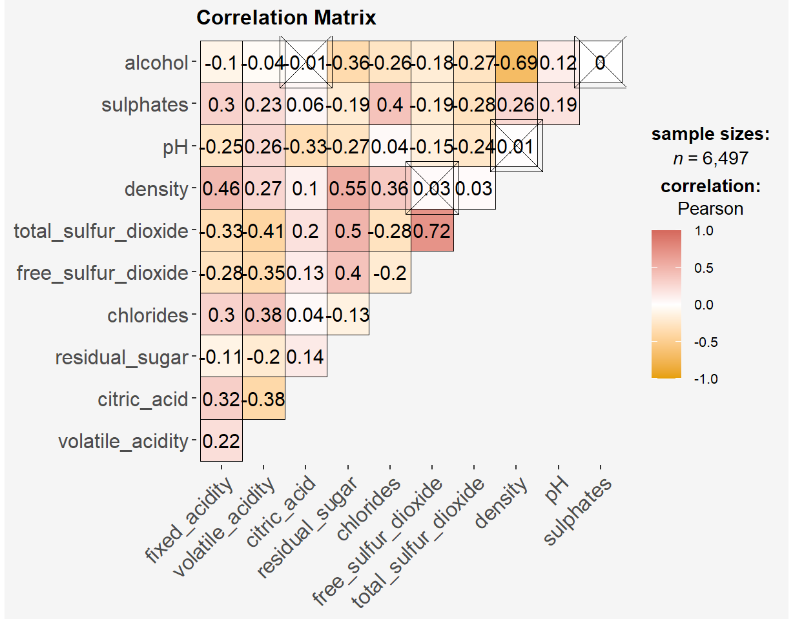
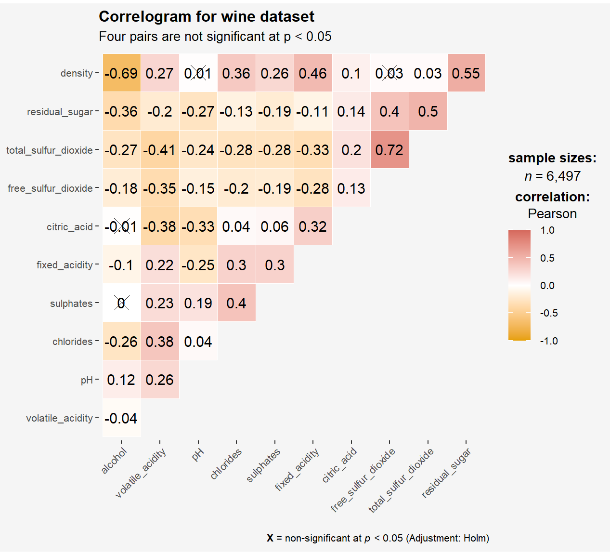

pacman::p_load(corrplot, ggstatsplot, tidyverse,
ggplot2, corrgram, ellipse,
"GGally")Hands-on Exercise 5b: Visual Correlation Analysis

1 Overview
Correlation coefficient is a popular statistic that use to measure the type and strength of the relationship between two variables. The values of a correlation coefficient ranges between -1.0 and 1.0. A correlation coefficient of 1 shows a perfect linear relationship between the two variables, while a -1.0 shows a perfect inverse relationship between the two variables. A correlation coefficient of 0.0 shows no linear relationship between the two variables.
When multivariate data are used, the correlation coefficeints of the pair comparisons are displayed in a table form known as correlation matrix or scatterplot matrix.
- First, we will learn how to create correlation matrix using pairs() of R Graphics.
- Next, you will learn how to plot corrgram using corrplot package of R.
- Lastly, you will learn how to create an interactive correlation matrix using plotly R.
2 Getting Starting
The code chunk below to install and launch corrplot, ggpubr, plotly and tidyverse in RStudio.
In this hands-on exercise, the Wine Quality Data Set of UCI Machine Learning Repository will be used. The data set consists of 13 variables and 6497 observations. For the purpose of this exercise, we will combine the red wine and white wine data into one data file.
#Reading the data into R environment
wine <- read_csv("data/winequality.csv") Next, I’ll take a peep at the file with glimpse():
glimpse(wine)Rows: 6,497
Columns: 13
$ fixed_acidity <dbl> 7.4, 7.8, 7.8, 11.2, 7.4, 7.4, 7.9, 7.3, 7.8, 7.5…
$ volatile_acidity <dbl> 0.700, 0.880, 0.760, 0.280, 0.700, 0.660, 0.600, …
$ citric_acid <dbl> 0.00, 0.00, 0.04, 0.56, 0.00, 0.00, 0.06, 0.00, 0…
$ residual_sugar <dbl> 1.9, 2.6, 2.3, 1.9, 1.9, 1.8, 1.6, 1.2, 2.0, 6.1,…
$ chlorides <dbl> 0.076, 0.098, 0.092, 0.075, 0.076, 0.075, 0.069, …
$ free_sulfur_dioxide <dbl> 11, 25, 15, 17, 11, 13, 15, 15, 9, 17, 15, 17, 16…
$ total_sulfur_dioxide <dbl> 34, 67, 54, 60, 34, 40, 59, 21, 18, 102, 65, 102,…
$ density <dbl> 0.9978, 0.9968, 0.9970, 0.9980, 0.9978, 0.9978, 0…
$ pH <dbl> 3.51, 3.20, 3.26, 3.16, 3.51, 3.51, 3.30, 3.39, 3…
$ sulphates <dbl> 0.56, 0.68, 0.65, 0.58, 0.56, 0.56, 0.46, 0.47, 0…
$ alcohol <dbl> 9.4, 9.8, 9.8, 9.8, 9.4, 9.4, 9.4, 10.0, 9.5, 10.…
$ quality <dbl> 5, 5, 5, 6, 5, 5, 5, 7, 7, 5, 5, 5, 5, 5, 5, 5, 7…
$ type <chr> "red", "red", "red", "red", "red", "red", "red", …3 Building Correlation Matrix: pairs() method
3.1 Basic correlation matrix
Figure below shows the scatter plot matrix of Wine Quality Data. It is a 11x11 matrix.
Show the code
par(bg = "#f5f5f5")
pairs(wine[,1:11],
main = "Correlation Matrix") Show the code
par(bg = "#f5f5f5")
pairs(wine[, c("residual_sugar", "pH", "alcohol", "quality")],
main = "Correlation Matrix with Selected Variables") 3.2 Drawing the lower corner
Show the code
par(bg = "#f5f5f5")
pairs(wine[,2:12],
upper.panel = NULL,
main = "Correlation Matrix with Lower Panel")The code chunk below displays the upper half of the correlation matrix.
Show the code
par(bg = "#f5f5f5")
pairs(wine[,2:12],
lower.panel = NULL,
main = "Correlation Matrix with Upper Panel")3.3 Including Correlation Coefficients
To show the correlation coefficient of each pair of variables instead of a scatter plot, panel.cor function will be used. This will also show higher correlations in a larger font.
par("usr")returns coordinates of the current plot
Show the code
par(bg = "#f5f5f5")
panel.cor <- function(x, y, digits=2, prefix="", cex.cor, ...) {
usr <- par("usr")
on.exit(par(usr))
par(usr = c(0, 1, 0, 1))
r <- abs(cor(x, y, use="complete.obs"))
txt <- format(c(r, 0.123456789), digits=digits)[1]
txt <- paste(prefix, txt, sep="")
if(missing(cex.cor)) cex.cor <- 0.8/strwidth(txt)
text(0.5, 0.5, txt, cex = cex.cor * (1 + r) / 2)
}
pairs(wine[,2:12],
upper.panel = panel.cor,
main = "Correlation Matrix with Correlation Coefficients")
4 Visualising Correlation Matrix: ggcormat() of ggstatplot
In this section, we learn how to visualising correlation matrix by using ggcorrmat() of ggstatsplot package.
4.1 Basic plot
ggcorrmat() uses the followingdefault arguments:
matrix.type= “upper”sig.level= 0.05conf.level= 0.95
Show the code
ggstatsplot::ggcorrmat(
data = wine,
cor.vars = 1:11,
title = "Correlation Matrix",
tl.cex = 8,
colors = c("#E69F00", "white","#d5695d"),
pch = "square cross",
) +
theme(
plot.background = element_rect(fill="#f5f5f5",colour="#f5f5f5"),
panel.background = element_rect(fill="#f5f5f5",colour="#f5f5f5"),
legend.background = element_rect(fill="#f5f5f5",colour="#f5f5f5")
) 
Show the code
ggstatsplot::ggcorrmat(
data = wine,
cor.vars = 1:11,
colors = c("#E69F00", "white","#d5695d"),
ggcorrplot.args = list(outline.color = "white",
hc.order = TRUE,
tl.cex = 8
),
title = "Correlogram for wine dataset",
subtitle = "Four pairs are not significant at p < 0.05"
) +
theme(
plot.background = element_rect(fill="#f5f5f5",colour="#f5f5f5"),
panel.background = element_rect(fill="#f5f5f5",colour="#f5f5f5"),
legend.background = element_rect(fill="#f5f5f5",colour="#f5f5f5")
) 
Note:
cor.varsargument is used to compute the correlation matrix needed to build the corrgram.- ggcorrplot.args argument provide additional (mostly aesthetic) arguments that will be passed to ggcorrplot::ggcorrplot function. The list should avoid any of the following arguments since they are already internally being used: corr,
method,p.mat,sig.level,ggtheme,colors,lab,pch,legend.title,digits. - The sample sub-code chunk can be used to control specific component of the plot such as the font size of the x-axis, y-axis, and the statistical report.
The sample sub-code chunk can be used to control specific component of the plot such as the font size of the x-axis, y-axis, and the statistical report.
ggplot.component = list(
theme(text=element_text(size=5),
axis.text.x = element_text(size = 8),
axis.text.y = element_text(size = 8),
plot.background = element_rect(fill="#f5f5f5",colour="#f5f5f5"),
panel.background = element_rect(fill="#f5f5f5",colour="#f5f5f5"),
legend.background = element_rect(fill="#f5f5f5",colour="#f5f5f5")
)
)5 Building Multiple Plots
ggstatsplot provides a special helper function for grouped analysis: grouped_ggcorrmat(). This is merely a wrapper function aroundcombine_plots(). It applies ggcorrmat() across all levels of a specified grouping variable and then combines list of individual plots into a single plot.
Show the code
grouped_ggcorrmat(
data = wine,
cor.vars = 1:11,
grouping.var = type,
colors = c("#E69F00", "white","#d5695d"),
type = "robust",
p.adjust.method = "holm",
plotgrid.args = list(ncol = 2),
ggcorrplot.args = list(outline.color = "black",
hc.order = TRUE,
tl.cex = 10),
annotation.args = list(
tag_levels = "a",
title = "Correlogram for wine dataset",
subtitle = "The measures are: alcohol, sulphates, fixed acidity, citric acid, chlorides, residual sugar, density, free sulfur dioxide and volatile acidity",
caption = "Dataset: UCI Machine Learning Repository"
)
) Note:
to build a facet plot, the only argument needed is
grouping.var.Behind group_ggcorrmat(), patchwork package is used to create the multiplot.
plotgrid.argsargument provides a list of additional arguments passed to patchwork::wrap_plots, except for guides argument which is already separately specified earlier.Likewise,
annotation.argsargument is calling plot annotation arguments of patchwork package.
6 Visualising Correlation Matrix using corrplot package
6.1 Getting started with corrplot
Before we can plot a corrgram using corrplot(), we need to compute the correlation matrix of wine data frame.
In the code chunk below, cor() of R Stats is used to compute the correlation matrix of wine data frame.
wine.cor <- cor(wine[, 1:11])Next, corrplot() is used to plot the corrgram by using all the default setting as shown in the code chunk below.
Show the code
par(bg = "#f5f5f5")
corrplot(wine.cor,
#title="Correlation Plot",
tl.cex = 0.6,
bg="#f5f5f5")- The default visual object used to plot the corrgram is circle.
- The default layout of the corrgram is a symmetric matrix. The default colour scheme is diverging blue-red.
- Blue colours are used to represent pair variables with positive correlation coefficients and red colours are used to represent pair variables with negative correlation coefficients.
- The intensity of the colour or also known as saturation is used to represent the strength of the correlation coefficient. Darker colours indicate relatively stronger linear relationship between the paired variables. On the other hand, lighter colours indicates relatively weaker linear relationship.
There are several options whichcan be applied to make this plot more beautiful and easy to understans.
method= to determine the shape of the correlation objects. Can take the values: “circle” (default), “square”, “ellipse”, “number”, “pie”, “shade” and “color”.outline= to draw the black outline of the correlation objects such as circles or squares.addgrid.col= to determine the color of the grids. Would dissapear if NA.order= the order of the columns. If not specified it is plotted as in the original matrix, but sometimes it is not so informative. Possible methods are: “AOE” (angular order of the eigenvectors), “FPC” (first principal component), “hclust”, “alphabet”. There is also hclust.method to determine the agglomeration method if the order is “hclust”.addrect= when the order is “hclust”, determines the number of rectangles according to the hierarchical cluster. rect.something arguments are about the rectangles added according to this argument.cl.something= these are the arguments about the color legend.tl.something= these are the arguments about the text labels.
6.2 Working with visual geometrics
In corrplot package, there are seven visual geometrics (parameter method) can be used to encode the attribute values. They are: circle, square, ellipse, number, shade, color and pie. The default is circle. As shown in the previous section, the default visual geometric of corrplot matrix is circle. However, this default setting can be changed by using the method argument as shown in the code chunk below.
Show the code
par(bg = "#f5f5f5")
corrplot(wine.cor,
#title="Correlation Plot with Ellipses",
method = "ellipse",
tl.srt = 45,
bg = "#f5f5f5") addrect` argument sets the value in numbers representing the number of clusters.
Show the code
par(bg = "#f5f5f5")
library(RColorBrewer)
corrplot(wine.cor,
#method = "color",
outline = T,
addgrid.col = "darkgray",
order="hclust",
addrect = 4, #<<
rect.col = "black",
rect.lwd = 5,
cl.pos = "b",
tl.col = "indianred4",
tl.cex = 0.6,
tl.srt = 45,
cl.cex = 1,
#addCoef.col = "white",
#number.digits = 2,
#number.cex = 0.75,
#title="Correlation Plot with Ellipses and Clusters",
method = "ellipse",
bg = "#f5f5f5") Show the code
par(bg = "#f5f5f5")
corrplot(wine.cor,
method = "color",
sig.level = c(0.001, 0.01, 0.05),
insig = 'label_sig',
addCoef.col="dodgerblue",
pch.col = "tomato",
font.main = 4,
mar=c(0,0,1,0),
cl.pos = "b", #Legend position
cl.ratio = 0.2, #wider color legend
tl.srt = 45,
tl.cex = 0.6,
number.cex = 0.6,
title="Correlation Plot Mapped by Color, with Correlation Coefficient",)6.3 Working with layout
corrplor() supports three layout types, namely: “full”, “upper” or “lower”. The default is “full” which display full matrix. The default setting can be changed by using the type argument of corrplot().
Show the code
par(bg = "#f5f5f5")
corrplot(wine.cor,
method = "ellipse",
#title="Correlation Plot with Lower Panel",
type="lower",
tl.srt = 45,
tl.cex = 0.6,
bg="#f5f5f5")The default layout of the corrgram can be further customised. For example, arguments diag and tl.col are used to turn off the diagonal cells and to change the axis text label colour to black colour respectively as shown in the code chunk and figure below.
Show the code
par(bg = "#f5f5f5")
corrplot(wine.cor,
method = "ellipse",
#title="Correlation Plot with Lower Panel & Black Axis Texts",
type="lower",
diag = FALSE,
tl.col = "black",
tl.srt = 45,
tl.cex = 0.6,
bg="#f5f5f5")6.4 Working with mixed layout
It is possible to design corrgram with mixed visual matrix of one half and numerical matrix on the other half. In order to create a corrgram with mixed layout, the corrplot.mixed(), a wrapped function for mixed visualisation style will be used.
Figure below shows a mixed layout corrgram plotted using wine quality data.
Show the code
par(bg = "#f5f5f5")
corrplot.mixed(wine.cor,
lower = "ellipse",
upper = "number",
tl.pos = "lt",
tl.srt = 45,
diag = "l",
tl.col = "black",
tl.cex = 0.6,
bg="#f5f5f5")Note: The argument lower and upper are used to define the visualisation method used. In this case ellipse is used to map the lower half of the corrgram and numerical matrix (i.e. number) is used to map the upper half of the corrgram. The argument tl.pos, on the other, is used to specify the placement of the axis label. Lastly, the diag argument is used to specify the glyph on the principal diagonal of the corrgram.
6.5 Combining corrgram with the significant test
In statistical analysis, we are also interested to know which pair of variables their correlation coefficients are statistically significant.
With corrplot package, we can use the cor.mtest() to compute the p-values and confidence interval for each pair of variables.
wine.sig = cor.mtest(wine.cor, conf.level= .95)We can then use the p.mat argument of corrplot function as shown in the code chunk below.
Show the code
par(bg = "#f5f5f5")
corrplot(wine.cor,
method = "number",
type = "lower",
diag = FALSE,
tl.col = "black",
tl.srt = 45,
p.mat = wine.sig$p,
sig.level = .05,
tl.cex = 0.6,
bg="#f5f5f5")
6.6 Reorder a corrgram
Matrix reorder is very important for mining the hiden structure and pattern in a corrgram. By default, the order of attributes of a corrgram is sorted according to the correlation matrix (i.e. “original”). The default setting can be overwritten by using the order argument of corrplot().
Currently, corrplot package support four sorting methods, they are:
- “AOE” is for the angular order of the eigenvectors (Michael Friendly, 2002).
- “FPC” for the first principal component order.
- “hclust” for hierarchical clustering order, and “hclust.method” for the agglomeration method to be used; should be one of “ward”, “single”, “complete”, “average”, “mcquitty”, “median” or “centroid”.
- “alphabet” for alphabetical order.
- “AOE”, “FPC”, “hclust”, “alphabet”. More algorithms can be found in seriation package.
“AOE”, “FPC”, “hclust”, “alphabet”. More algorithms can be found in seriation package.
Show the code
par(bg = "#f5f5f5")
corrplot.mixed(wine.cor,
lower = "shade", #<<
upper = "number",
tl.pos = "lt",
tl.srt = 45,
tl.cex = 0.6,
diag = "l",
order="AOE",
tl.col = "black",
bg="#f5f5f5")6.7 Reordering a correlation matrix using hclust
If using hclust, corrplot() can draw rectangles around the corrgram based on the results of hierarchical clustering. add_rect= specifies number of clusters.
Show the code
par(bg = "#f5f5f5")
corrplot(wine.cor,
method = "ellipse",
tl.pos = "lt",
tl.col = "black",
tl.srt = 45,
tl.cex = 0.6,
order="hclust",
hclust.method = "ward.D",
addrect = 3,
bg="#f5f5f5")Show the code
par(bg = "#f5f5f5")
corrplot(wine.cor,
type = "upper",
#tl.pos = "lt",
tl.col = "black",
tl.srt = 45,
tl.cex = 0.6,
order="hclust",
hclust.method = "ward.D",
col=c("black", "white"),
bg="lightblue",
#title="Correlation Plot ordered by clusters"
)7 Enhancing Pair Plots with GGally
While the base R pairs() function is straightforward, it lacks the flexibility and aesthetic appeal of the ggplot2 package. GGally is an extension of ggplot2 that includes the ggpairs() function for creating enhanced pairs plots.
You can also map a categorical variable to color to distinguish different groups in the scatter plots. Let’s add the type variable, which represents the type of wine, as a grouping variable:
Show the code
ggpairs(wine[, 1:11],
mapping = aes(color=as.factor(wine$type)),
upper = list(continuous = wrap("cor", size = 1.5))
) +
theme(
plot.title = element_text(hjust=0.5, face="bold"),
#panel.background = element_rect(fill = '#f5f5f5', color = '#f5f5f5'),
legend.background = element_rect(colour = "#f5f5f5", fill = "#f5f5f5"),
plot.background = element_rect(fill="#f5f5f5",colour="#f5f5f5") ,
) 8 Reference
- Kam, T.S. (2023). Visual Correlation Analysis.